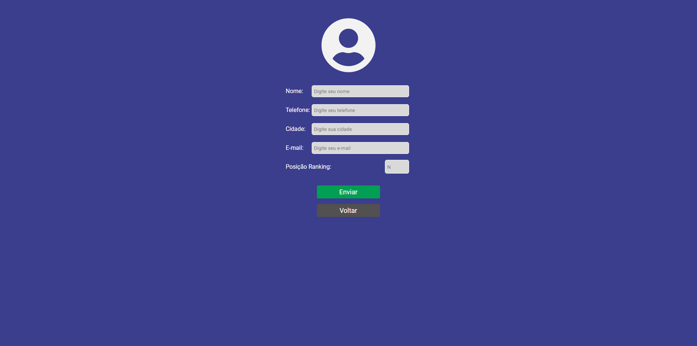

13 de Julho de 2023
Continuando os estudos

Esse projeto foi um desafio. Estava com ele guardado para fazer já havia muito tempo mas não tinha motivação o suficiente para começar, foi um período difícil. Porém, quando comecei, as coisas começaram a dar certo, tive umas ajudinhas aqui e ali e com isso consegui finalizar e o resultado foi incrível. Era um projeto simples, mas ter conseguido fazer a maior parte sozinha me deixou extremamente animada.